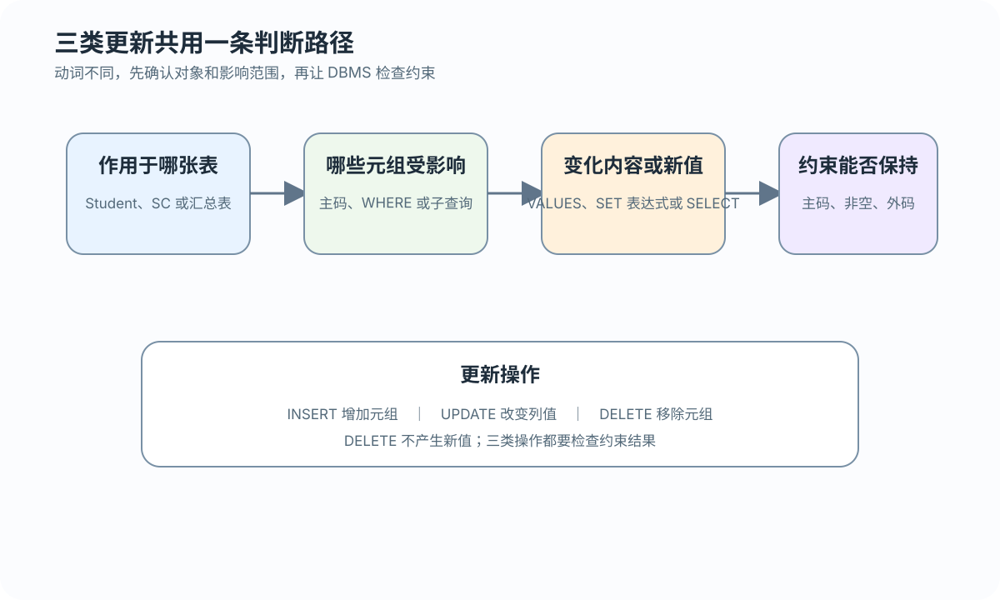
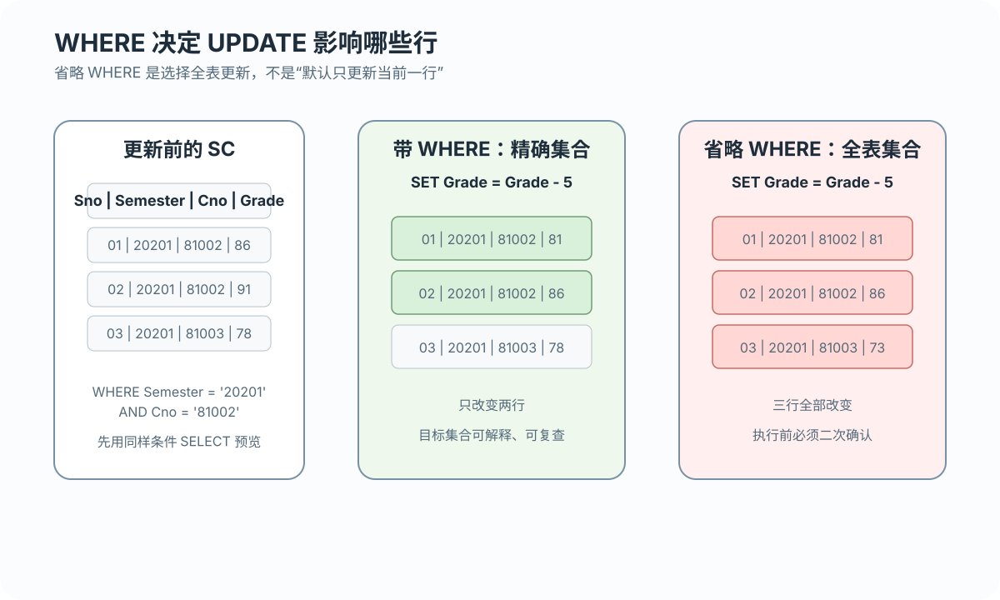
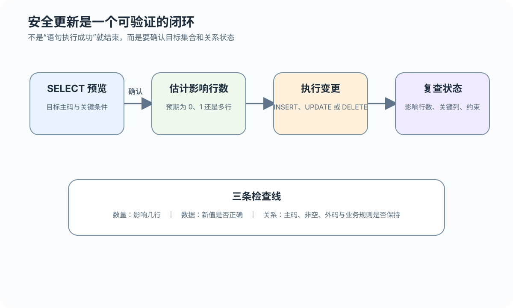

四个判断点
先确定目标表，再确定受影响元组；然后说明变化内容和取值来源，最后检查约束能否保持
插入前核对列和值，修改或删除前用 SELECT 查清目标行
 VER. 2608
Built with impress.js
VER. 2608
Built with impress.js
插入前核对列和值；更新或删除前预览目标行；执行后复查行数、新值和约束
INSERT 给新行；UPDATE 选行并给值；DELETE 选待删行；三者都检查约束

先确定目标表，再确定受影响元组；然后说明变化内容和取值来源，最后检查约束能否保持
新元组来自 VALUES 或 SELECT
目标行由 WHERE 选出，值由 SET 给出
目标行由 WHERE 选出，不产生新值
明确的属性列列表让语句不依赖表定义顺序
01
02INSERT INTO Student(Sno, Sname, Ssex, Smajor, Sbirthdate)
VALUES ('20180009', '陈冬', '男', '信息管理与信息系统', '2000-5-22');01
02
03INSERT INTO SC(Sno, Cno, Semester, Teachingclass)
VALUES ('20180009', '81004', '20202', '81004-01');
-- Grade 未提供；当前 3.2 定义没有 DEFAULT，取 NULL未列出的列有 DEFAULT 时取默认值；可空且无 DEFAULT 时取 NULL；NOT NULL 且无 DEFAULT 时会导致插入失败
INSERT ... SELECT 按目标列写入结果；先执行 SELECT，预览待插入的元组
01
02
03
04
05
06
07
08INSERT INTO Smajor_age (Smajor, Avg_age)
SELECT Smajor,
AVG(EXTRACT(YEAR FROM CURRENT_DATE)
- EXTRACT(YEAR FROM Sbirthdate))
FROM Student
WHERE Smajor IS NOT NULL
AND Sbirthdate IS NOT NULL
GROUP BY Smajor;先预览查询结果，再批量写入；目标列、列数、类型与约束必须对应
新元组必须符合表定义和完整性约束
| 情况 | 结果 | 需要检查 |
|---|---|---|
| 列表中提供值 | 按列名对应写入 | 类型与业务含义 |
| 省略可空且无 DEFAULT 的列 | 取 NULL | 是否允许空值 |
| 省略 NOT NULL 且有 DEFAULT 的列 | 取 DEFAULT | 默认值定义 |
| 省略 NOT NULL 且无 DEFAULT 的列 | 插入失败 | 是否补齐必需值 |
| 主码重复或外码不存在 | DBMS 拒绝该行 | 实体与参照完整性 |
当前 3.2 的 SC.Grade 没有 DEFAULT；单行插入中省略 Grade 会取 NULL，不是 0
SET 表达新值，WHERE 确定受影响的元组
01
02
03
04
05UPDATE SC
SET Grade = Grade - 5
WHERE Semester = '20201'
AND Cno = '81002'
AND Grade IS NOT NULL;本例只调整已经录入的成绩；NULL 表示尚未录入，不参与数值减法，0—100 范围需由约束或业务条件保证
执行前用同一 WHERE 做 SELECT，核对主码、当前值和预计行数

以主码或业务键定位一个元组
用学期、课程和状态组合出目标集合
省略 WHERE 后表中所有元组都会受影响
执行 UPDATE 前，应使用相同的 WHERE Semester = '20201' AND Cno = '81002' 做 SELECT 预览
外层更新表，内层查询负责找出符合条件的键
01
02
03
04
05
06
07UPDATE SC
SET Grade = 0
WHERE Grade IS NOT NULL
AND Sno IN
(SELECT Sno
FROM Student
WHERE Smajor = '计算机科学与技术');先运行内层 SELECT，确认它返回的键确实是要修改的对象；不要把尚未录入的 NULL 无提示地改成零分
DELETE 改变表实例，不改变表对象、列和索引的定义
01
02
03
04
05
06
07
08-- 先检查 SC 是否仍有引用记录
SELECT Sno, Cno
FROM SC
WHERE Sno = '20180007';
-- 确认按业务规则处理引用后，再判断是否删除 Student
DELETE FROM Student
WHERE Sno = '20180007';| 操作 | 删除元组 | 删除表定义 |
|---|---|---|
DELETE ... WHERE | 指定元组 | 否 |
DELETE FROM 表 | 全部元组 | 否 |
DROP TABLE | 连同对象一起移除 | 是 |
若 SC 仍引用该 Student，外码可能拒绝 DELETE；只有约束明确声明 ON DELETE CASCADE，才讨论级联处理
删除条件确定目标元组；外码引用和业务后果还需要单独检查
01
02
03
04
05DELETE FROM SC
WHERE Sno IN
(SELECT Sno
FROM Student
WHERE Smajor = '计算机科学与技术');本例删除的是 SC 子行，不删除 Student；若删除被引用的 Student，是否同步删除 SC 由外码上的 ON DELETE 规则决定
预览结果应对应实际行数，新值还要满足实体、参照和用户定义完整性

先用 SELECT 预览目标集合，再估计影响行数；执行变更后复查关键列
主码唯一且不为空
外码引用有效的被参照值
业务范围和状态规则仍然成立
客户端显示的影响行数是辅助证据，不能替代变更后的 SELECT 复查
任务：把 20201 学期 81002 课程中已录入的成绩统一减 5 分；不直接执行语句
写出只查询目标行的 SELECT，说明为什么必须排除 Grade IS NULL，并预测命中行数
判断减 5 后是否可能越过成绩范围，说明由哪个约束或业务条件阻止非法结果
执行后用相同键和条件复查新值，将实际影响行数与预览集合逐行对应
影响行数只能说明数量，预览与复查才能证明被改变的是预期对象且更新后仍满足规则
SC 插入一条尚未考试的选课记录时，怎样用属性列列表表达“成绩未知”而不是“成绩为零”？UPDATE 少写课程号条件后，目标集合会怎样变化，执行前用什么证据能发现这个错误？